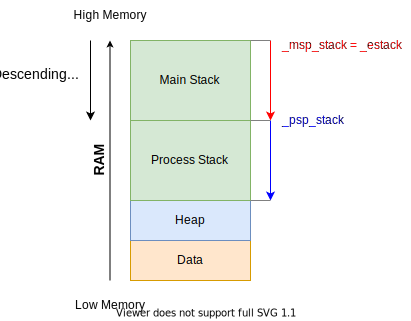
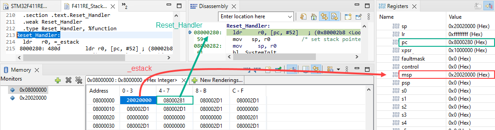
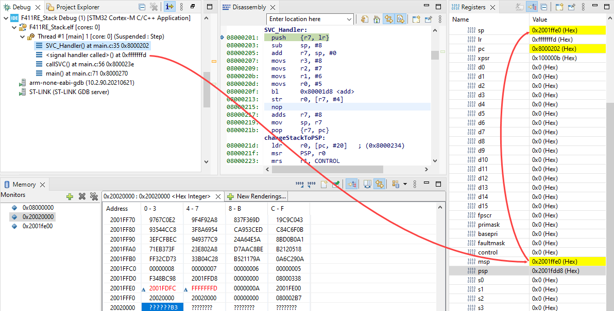
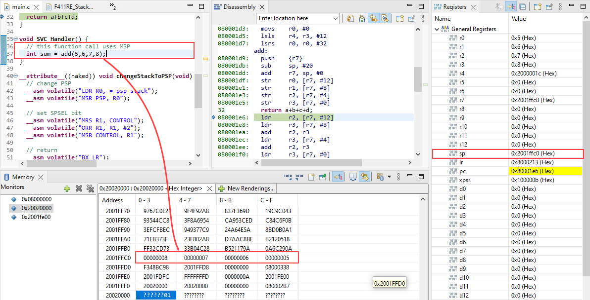
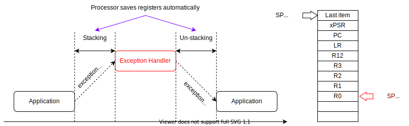
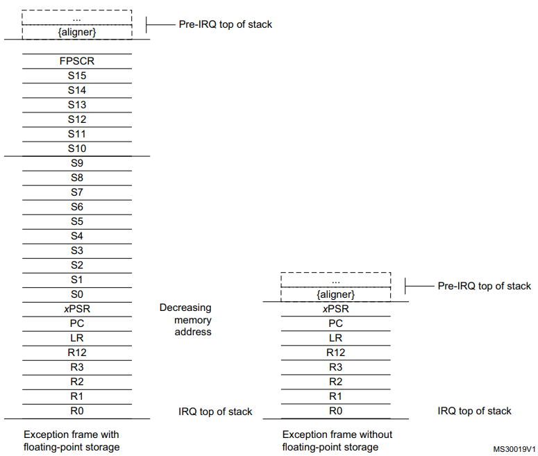

Stack Memory is part of the main memory reserved for the temporary storage of data (transient data), mainly used in function call, interrupt/exception handling. The ARM Cortex-M processor uses a full descending stack model. The processor also implements two stacks, the main stack and the process stack, with a pointer for each held in independent registers
Stack Memory is part of the main memory reserved for the temporary storage of data (transient data), mainly used in function call, interrupt/exception handling.
Stack Memory is accessed in Last In First Out LIFO manner. The stack can be accessed using PUSH, POP or memory instructions such as LDR, STR.
The stack is traced by the Stack Pointer (SP), and is used to save below information:
Temporary storage for processor register values
Temporary storage for local variables of functions
Save the context of the current executing code before moving to exception/ interrupt handing routine
The ARM Cortex-M processor uses a full descending stack. This means the stack pointer indicates the last stacked item on the stack memory. When the processor pushes a new item onto the stack, it decrements the stack pointer and then writes the item to the new memory location. The processor implements two stacks, the main stack and the process stack, with independent copies of the stack pointer.
The Stack Pointer (SP) is register R13. In Thread mode, bit[1] of the CONTROL register indicates the stack pointer to use:
0: Main Stack Pointer (MSP). This is the default after reset, used for all exception/ interrupt handler and also for code running in thread mode.
1: Process Stack Pointer (PSP). This alternative stack is only can be used in thread mode. It is usually used for application task in embedded systems and OS
On reset, the processor loads the MSP with the value from address 0x00000000.
In ARM projects based on ARM CMSIS, the linker decides to place Stack at the end of RAM.
Let check the linker file STM32F411RETX_FLASH.ld:
/* Highest address of the user mode stack */_estack=ORIGIN(RAM)+LENGTH(RAM);/* end of "RAM" Ram type memory */_Min_Heap_Size=0x200;/* required amount of heap */_Min_Stack_Size=0x400;/* required amount of stack *//* Memories definition */MEMORY{RAM(xrw):ORIGIN=0x20000000,LENGTH=128KFLASH(rx):ORIGIN=0x8000000,LENGTH=512K}
On reset, the processor loads the MSP with the value from address 0x00000000. At that initial address, the Interrupt Vector Table must be there.
The startup code in startup_stm32f411retx.s defines the isr_vector as below:
with the value of _estack at the 0x00000000 which is declared in the linker script:
/* Sections */SECTIONS{/* The startup code into "FLASH" Rom type memory */.isr_vector:{.=ALIGN(4);KEEP(*(.isr_vector))/* Startup code */.=ALIGN(4);}>FLASH...
In assembly language programming, the function prologue is a few lines of code at the beginning of a function, which prepare the stack and registers for use within the function. Similarly, the function epilogue appears at the end of the function, and restores the stack and registers to the state they were in before the function was called.
Prologue
A function prologue typically does the following actions if the architecture has a base pointer (also known as frame pointer) and a stack pointer:
Pushes current base pointer onto the stack, so it can be restored later.
Value of base pointer is set to the address of stack pointer (which is pointed to the top of the stack) so that the base pointer will point to the top of the stack.
Moves the stack pointer further by decreasing or increasing its value, depending on whether the stack grows down or up. On x86, the stack pointer is decreased to make room for the function’s local variables.
Example:
push{r7}; Save frame pointer subsp,#20; Reserve 20 bytesaddr7,sp,#0; Set frame pointer to new stack pointerstrr0,[r7,#12]; Save params on R0-R3 to stackstrr1,[r7,#8]strr2,[r7,#4]strr3,[r7,#0]
Epilogue
Function epilogue reverses the actions of the function prologue and returns control to the calling function. It typically does the following actions (this procedure may differ from one architecture to another):
Drop the stack pointer to the current base pointer, so room reserved in the prologue for local variables is freed.
Pops the base pointer off the stack, so it is restored to its value before the prologue.
Returns to the calling function, by popping the previous frame’s program counter off the stack and jumping to it.
Example:
addsr7,#20; Return back to last stack pointermovsp,r7ldr.wr7,[sp],#4; Get last frame pointerbxlr; Exit function by brach and execute saved instruction in LR
In this example, we will create 2 Stack Regions and assign them to MSP and PSP.
Step 0: Create a new project
You should create a bare-metal project which just has a few files including a linker and a main.
Step 1: Define Stack Start Address
The stack model is that Main Stack and Process Stack are a half of allocated stack space. By default, after reset, the processor uses the Main Stack, therefore, Main Stack is located at the start of Stack region.
Main Stack and Process Stack
In the linker script STM32F411RETX_FLASH.ld, define 2 new symbols _msp_stack and _psp_stack:
/* Highest address of the user mode stack */_estack=ORIGIN(RAM)+LENGTH(RAM);/* end of "RAM" Ram type memory */_Min_Heap_Size=0x200;/* required amount of heap */_Min_Stack_Size=0x400;/* required amount of stack */_msp_stack=_estack;_psp_stack=_estack-_Min_Stack_Size/2;
Step 2: Demo program to change Stack to PSP
intadd(inta,intb,intc,intd){returna+b+c+d;}voidSVC_Handler(){// this function call uses MSPintsum=add(5,6,7,8);}__attribute__((naked))voidchangeStackToPSP(void){// change PSP__asmvolatile("LDR R0, =_psp_stack");__asmvolatile("MSR PSP, R0");// set SPSEL bit__asmvolatile("MRS R1, CONTROL");__asmvolatile("ORR R1, R1, #2");__asmvolatile("MSR CONTROL, R1");// return__asmvolatile("BX LR");}voidcallSVC(){__asmvolatile("SVC #0");}intmain(void){changeStackToPSP();// this function call uses PSPintsum=add(1,2,3,4);// trigger SVC will force to use MSPcallSVC();/* Loop forever */for(;;);}
Step 4: At reset
You have to place a breakpoint right at the Reset_Handler function which is the first instruction loaded into PC.
Right after CPU reset:
The MSP register is loaded from the address 0x00000000 in System Memory (alias to 0x08000000 in Flash) which has _estack value.
The PC register then is loaded with the value at the address 0x00000004 which is the address of Reset_Handler (added 1 to set the Thumb bit).
_estack and Reset_Handler are loaded to MSP and PC at reset
Step 5: Application changes to use PSP
To change to PSP stack, we have to write a special function that set a new value to PSP regsiter, and set a bit in CONTROL register.
__attribute__((naked)) is used to tell compiler that this function is embedded assembly function and compiler does not generate prologue and epilogue sequences for it. The compiler only supports basic __asm statements in __attribute__((naked)) functions.
Note that:
The _psp_stack symbol is defined in the linker script.
Manually return from a naked function (no epilogue) using assembly instruction BX LR
When CPU sees an SVC call, it automatically changes to MSP Stack by setting SP to MSP.
MSP is used in Exception Handler
During an exception/ interrupt handler, MSP is used.
Exception is using MSP
If we do not clear the SPSEL in the CONTROL register, the SP register will be switch back to PSP after returning from the exception/ interrupt handler.
Procedure Call Standard for Arm Architecture (AAPCS)#
A Procedure Call Standard or Calling Convention defines how different compilation units, even when compiled by different compilers, can work together. It defines how parameters are passed from one function to another, which registers and other program states must be preserved by caller a callee and what might be altered by the callee. The procedure call standard is one in a set of standards, which define the application binary interface (ABI) a compilation unit has to respect.
Parameters and Arguments
A parameter is a variable name and type, which is part of the declaration of the function
An argument, on the other side, is the actual value passed into a function
Caller-saved and Callee-saved registers
The general-purpose registers R0-R3 are used to pass arguments to a function and also return values. They are not needed to be preserved by the callee, they are caller-saved.
The registers R4-R8, R10 and R11 are used to hold local variables within a function. A caller can expect them to be unchanged, when the called function returns: They are callee-saved.
Passing arguments
The arguments are bound to registers, which is used to pass the argument to the function. When all caller-saved registers (R0 to R3) are bound to arguments, the stack is used to pass all arguments left:
xxxxxxx<main>:8000266:2305movsr3,#5; 8000268:9300strr3,[sp,#0]; save arg 5 to stack800026a:2304movsr3,#4; save arg 4 to R3800026c:2203movsr2,#3; save arg 3 to R2800026e:2102movsr1,#2; save arg 2 to R18000270:2001movsr0,#1; save arg 1 to R08000272:f7ffffb1bl80001d8<add>; call to function...080001d8<add>:80001d8:b480push{r7}; save frame pointer80001da:b085subsp,#20; reserve 20 bytes on stack80001dc:af00addr7,sp,#0; set new frame pointer80001de:60f8strr0,[r7,#12]; save arg 1 to stack80001e0:60b9strr1,[r7,#8]; save arg 2 to stack80001e2:607astrr2,[r7,#4]; save arg 3 to stack80001e4:603bstrr3,[r7,#0]; save arg 4 to stack80001e6:68faldrr2,[r7,#12]; get arg 1 from stack80001e8:68bbldrr3,[r7,#8]; get arg 2 from stack80001ea:441aaddr2,r3; sum += arg 1 + arg 280001ec:687bldrr3,[r7,#4]; get arg 3 from stack80001ee:441aaddr2,r3; sum += arg 380001f0:683bldrr3,[r7,#0]; get arg 4 from stack80001f2:441aaddr2,r3; sum += arg 480001f4:69bbldrr3,[r7,#24]; get arg 5 from stack80001f6:4413addr3,r2; sum += arg 580001f8:4618movr0,r3; save sum to r0 as return value80001fa:3714addsr7,#20; restore frame pointer80001fc:46bdmovsp,r7; restore stack pointer80001fe:f85d7b04ldr.wr7,[sp],#4; get saved frame pointer, pop back stack pointer8000202:4770bxlr; return...
When application is running, if there is any exception/ interrupt raised, the processor will do a special procedure called “Context Saving”.
Context saving allows the current executing application flow is saved and then restored because all registers would have the same values as when the interrupt started.
This context saving also be used to switch tasks which is used in OS.
Automatic context saving on stack
When the processor takes an exception, unless the exception is a tail-chained or a late-arriving exception, the processor pushes information onto the current stack. This operation
is referred as stacking and the structure of eight data words is referred as stack frame.
When using floating-point routines, the Cortex-M4 processor automatically stacks the architected floating-point state on exception entry.
Stack frame layout with Floating-point Unit or without it
The stack frame includes the return address. This is the address of the next instruction in the interrupted program. This value is restored to the PC at exception return so that the interrupted program resumes.